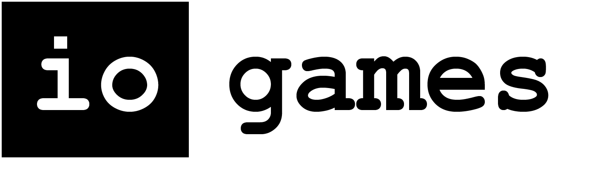

Baily's Beads


@UCI
At UCI I am creating a 2D video game named Baily’s Beads. My team consists of 5 additional members. We are utilizing agile principles and have organized our time into 3 sprints which each last 2 weeks. We created our own scrum and backlog boards using Google Docs. We are utilizing the boards to assign tasks, predict how long they will take, and track everyone’s hours along with the progress they’ve made. We meet around three times a week for an hour or so to hash out ideas and come up with solutions to existing problems. We often have white board discussions, we have created wire frame designs, and we are all continually writing documentation. Some of the things I made for the game include: a ufo sprite with flashing lights, the starry night sky game play background, the company iogames logo, the game logo, an alien, an astronaut, a sprite of the sun which appears to expand and contract.